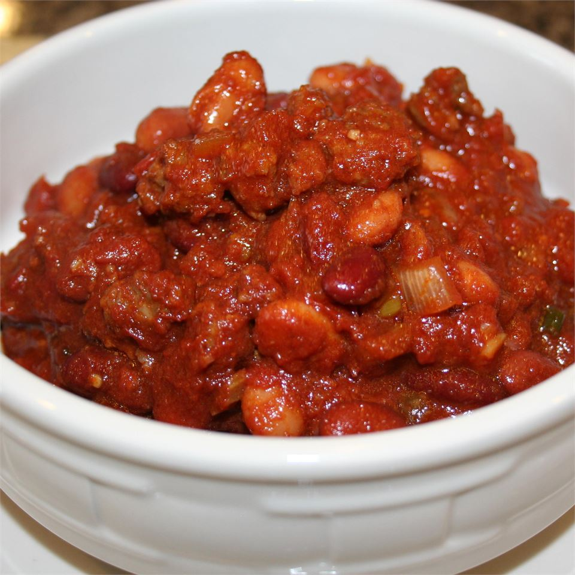

Chili Recipe
Ingredients
- 1 (14.5 ounce) can stewed tomatoes, chopped
- 1 (6 ounce) can tomato paste
- 1 carrot, sliced
- 1 onion, chopped
- 2 stalks celery, chopped
- ¼ cup white wine
- ¼ cup chopped green bell pepper
- ¼ cup chopped red bell pepper
- ⅓ cup bottled steak sauce
- 5 slices bacon
- 1 ½ pounds ground beef
- 1 (1.25 ounce) package chili seasoning mix
- 1 teaspoon ground cumin
- 1 (15 ounce) can kidney beans, drained
- 1 tablespoon chopped fresh cilantro
- 1 tablespoon chopped fresh parsley
Directions
- In a large pot over medium-low heat, combine tomatoes, tomato paste, carrot, onion, celery, wine, pepper flakes, bell peppers and steak sauce.
- While tomato mixture is simmering, in a large skillet over medium heat, cook bacon until crisp. Remove to paper towels. Cook beef in bacon drippings until brown; drain. Stir chili seasoning into ground beef.
- Stir seasoned beef, cumin and bacon into tomato mixture. Continue to simmer until vegetables are tender and flavors are well blended.
- Stir in beans, cilantro and parsley. Heat through and serve.